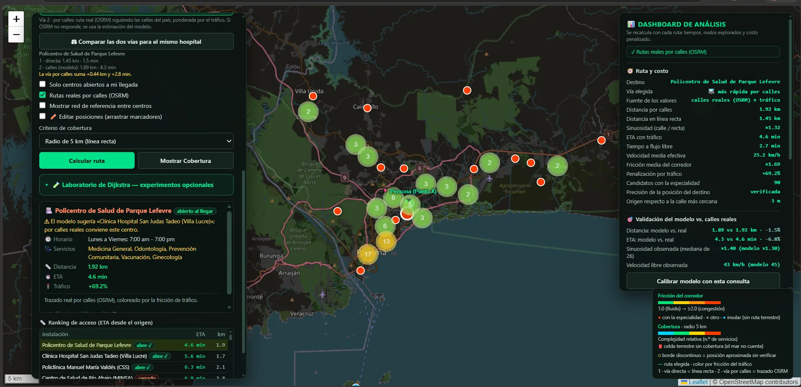
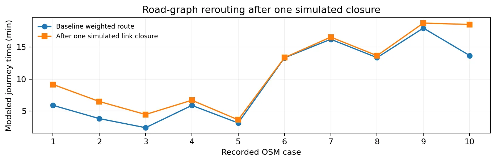
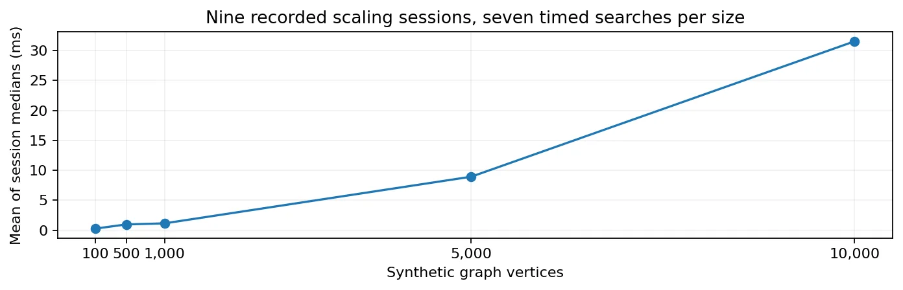

10 casos
Recorridos viales documentados sobre OSM
Una investigación aplicada sobre caminos mínimos hacia instalaciones de salud en Panamá, con Dijkstra, BFS y Floyd–Warshall, grafos ponderados y experimentos reproducibles.

El estudio separa el grafo abstracto de instalaciones y los subgrafos viales dirigidos de OpenStreetMap. Sus resultados describen experimentos documentados, no mediciones de tráfico en tiempo real.
Prueba un grafo sintético de siete nodos. Los pesos son unidades inventadas para explicar los algoritmos; no representan distancias ni tiempos reales en Panamá.
Selecciona un origen, un destino y un algoritmo.
Dijkstra minimiza el costo acumulado. BFS minimiza conexiones. Floyd–Warshall calcula todos los pares, y luego reconstruye la ruta solicitada. Esta demo JavaScript no es la aplicación científica Python.
Un buen experimento también explica qué no demuestra. Las siguientes figuras y cifras pertenecen al trabajo experimental documentado.

Se encontró un recorrido alternativo en los diez bloqueos probados. No implica disponibilidad garantizada en toda la red de Panamá.

Mediciones sobre grafos artificiales de hasta 10.000 vértices, útiles para observar crecimiento de cómputo y memoria.
Artículo, datos agregados y evidencias originales disponibles en el repositorio. La publicación editorial del manuscrito aún está pendiente.